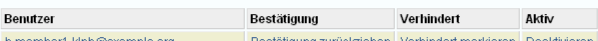

Benutzer/innenverwaltung¶
Die Benutzer/innenverwaltung gibt einen Überblick über alle Benutzer/innen des Systems und dient als Aufgabenbereich, in dem Benutzer/innen als bestätigt, verhindert oder aktiv markiert werden können. Zudem können hier die Daten der Benutzerin bearbeitet werden.
Suchkriterien¶
Mittels Filter kann die Benutzer/innenliste nach bestimmten Kriterien beschränkt werden: Selektieren Sie unter dem Auswahlfeld Bestätigung, ob nur die bestätigten, die nicht-bestätigten oder die Benutzer/innen beider Kategorien angezeigt werden sollen. Das Auswahlfeld Aktivität ermöglicht es, nur die aktiven, die inaktiven oder die Benutzer/innen beider Kategorien anzeigen zu lassen. Unter Gruppen können Sie die Benutzer/innen nach einer bestimmten Gruppe auswählen. Geben Sie für diese Suche in das dafür vorgesehene Feld den/die ersten Buchstaben der Gruppe ein. Die Autovervollständigung bewirkt eine alphabetische Auflistung aller Namen. Wählen Sie die gesuchte Gruppe mit einem Klick aus. Wenn Sie nach einer einzelnen Person suchen, geben Sie im Eingabefeld Name/E-Mail einen Teil der E-Mailaddresse, des Vornamens oder des Nachnamens ein.
Klicken Sie nach den Eingaben auf den Suche-Knopf.
Benutzer/innentabelle¶
Benutzer¶
Indem Sie auf den jeweiligen Benutzerinnamen-Link in der Spalte Benutzer klicken, können Sie spezielle Informationen über die Benutzerin bearbeiten. Es öffnet sich die Detailansicht der Benutzerin (Hilfe-Seite: Detailansicht des Benutzers/der Benutzerin), wo Sie Änderungen vornehmen können.
Bestätigung¶
Sie können die Benutzerin bestätigen oder die Bestätigung zurückziehen, indem Sie auf den entsprechenden Link in der Spalte Bestätigung klicken. Es öffnet sich die Seite zur Bestätigung der Benutzerin, auf der Sie durch ein Klicken auf den Link Bestätigung zurückziehen bzw. Bestätigen den Status ändern können. Beachten Sie, dass unbestätigte Benutzer/innen keine Studien einreichen können.
Verhindert¶
Indem Sie auf den Link neben der jeweiligen Benutzerin in der Spalte Verhindert klicken, können Sie die Benutzerin als verhindert markieren bzw. die Markierung wieder aufheben. Die Tätigkeiten einer verhinderten Benutzerin können von anderen Personen angenommen werden.
Aktiv¶
Indem Sie auf den Link neben der jeweiligen Benutzerin in der Spalte Aktiv klicken, können Sie die Benutzerin als aktiv bzw. inaktiv markieren. Beachten Sie, dass sich inaktive Benutzer/innen nicht in das System einloggen können.